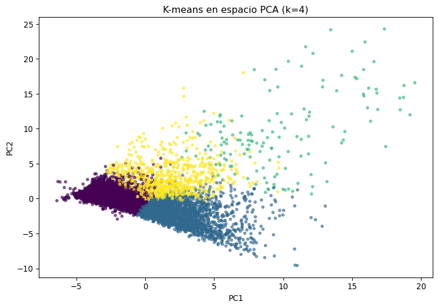
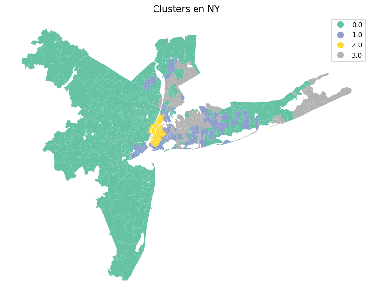

Número de componentes principales: 9
Varianza explicada por componente: [0.34685209 0.23041372 0.11418052 0.06327196 0.04944255 0.04276308
0.02503939 0.02146856 0.01447887]
Varianza explicada acumulada: [0.34685209 0.57726581 0.69144634 0.7547183 0.80416085 0.84692393
0.87196332 0.89343188 0.90791075]Análisis del mercado inmobiliario en Estados Unidos
Abstract
Este informe segmenta los mercados inmobiliarios estadounidenses mediante PCA y K-Means, considerando características de mercado, puntos de interés y datos demográficos. Se documenta la metodología, se interpretan los componentes principales, se perfilan los clústeres y se muestra su distribución espacial.
Descripción general del proyecto
Este informe presenta una segmentación del mercado inmobiliario estadounidense basada en datos a nivel de código postal/ciudad. Combinamos indicadores de vivienda (p. ej., precio medio de venta/listado, inventario, días en el mercado) con puntos de interés (POI) de OSM y datos demográficos. Nuestro flujo de trabajo se centra en la estandarización, la reducción de dimensionalidad (PCA), la agrupación (K-Means) y la visualización geoespacial. Mantenemos el código sin cambios y priorizamos una interpretación clara y reproducible de cada paso.
Preguntas clave que abordamos: - ¿Qué dimensiones latentes resumen mejor la variación entre ubicaciones? - ¿Cuántos segmentos de mercado (clústeres) distintos emergen? - ¿Qué caracteriza a cada clúster en términos de señales de mercado, POI y datos demográficos? - ¿Dónde se ubican geográficamente estos clústeres?
Nota: Este documento no incluye predicción supervisada de precios. El énfasis está en el descubrimiento e interpretación de la estructura. Pero sería una buena actualización para el proyecto en el futuro.
Carga de datos
Empezamos cargando el dataset principal desde Kaggle (HousingTS) y hacemos una pequeña exploración para comprenderlo mejor. Este es el link del dataset: https://www.kaggle.com/datasets/shengkunwang/housets-dataset
Como este proyecto lo estamos realizado a través de positron visualizamos en el propio IDE el dataset y vemos que el porcentaje de datos missing es 0 para todas las variables. Es un dataset limpio y listo para analizar.
Análisis de componentes principales (PCA)
Aplicamos PCA para capturar la variación dominante entre ubicaciones, reteniendo una proporción predefinida de varianza explicada del 90%.
Ahora vamos a visualizar la interpretación de PC1 y PC2. Esto nos ayuda a resumir los gradientes generales de mercado, demográficos y de puntos de interés.
plt.figure(figsize=(8,6))
plt.scatter(pca_df["PC1"], pca_df["PC2"], s=8, alpha=0.5)
plt.xlabel("PC1")
plt.ylabel("PC2")
plt.title("Espacio PCA = PC1 vs PC2")
plt.show()
Ahora vamos a realizar la clusterización y vamos a visualizar el mismo gráfico de dispersion de las componentes principales ya segmentado.
Clusterización con k-means
k con mejor silueta: 4
Ahora ya visualizamos muy bien cómo se distribuyen estos clusters en función de la PC1 y la PC2.
Ahora vamos a graficar una tabla para entender estos clusters mejor. Pero primero tenemos que entender qué variables son las que más información nos dan. Por tanto medimos la varianza entre los clusters y obtenemos la lista de variables que mayor varianza dan.
station 6.292687
restaurant 6.033795
supermarket 5.931101
bank 5.798149
park 5.090172
hospital 4.288910
school 3.899366
median_list_ppsf 2.905003
median_ppsf 2.526744
bus 2.178003
Median Home Value 1.285565
price 1.164426
median_sale_price 1.155048
Total Housing Units 0.807132
mall 0.791088
median_list_price 0.729817
Total Labor Force 0.695403
Median Commute Time 0.679908
Per Capita Income 0.656566
Total School Enrollment 0.654586
dtype: float64Una vez teniendo las variables que más información aportan a la diferenciación y al entendimiento de estos clusters. Generamos la tabla.
Ahora ya podemos interpretar los resultados y definir los 4 clusters.
Cluster 0 — “Zonas rezagadas o de baja actividad urbana”
Prácticamente todas las variables están en negativo, la mayoría entre –0.2 y –0.7.
Destacan valores bajos en:
station, restaurant, supermarket, bank, park, hospital, school → indica baja densidad de servicios y equipamientos.
Total Housing Units, Total Labor Force, Per Capita Income, Total School Enrollment también por debajo de la media → zonas menos pobladas y con menor dinamismo económico.
En conjunto: este grupo representa áreas periféricas o rurales, con menor acceso a infraestructura, menor actividad económica y precios inmobiliarios más bajos.
Cluster 1 — “Zonas residenciales estables”
La mayoría de los z-scores rondan 0, lo que indica valores promedio respecto al conjunto.
Algunas variables ligeramente por encima del promedio:
mall, park, school, Total Housing Units, Total Labor Force, Median Commute Time, Total School Enrollment → áreas con actividad moderada, algo más residenciales y con cierta dotación de servicios.
Variables por debajo de la media en median_list_price, price, median_ppsf → precios algo más bajos que el promedio.
En conjunto: zonas residenciales medias, equilibradas, con buena dotación pero sin excesos de precios o servicios extremos.
Cluster 2 — “Núcleos urbanos altamente desarrollados”
Es el grupo más extremo y distintivo:
z-scores de +4 a +5 en casi todas las variables principales (station, restaurant, supermarket, bank, park, hospital, school).
También valores altos en variables económicas e inmobiliarias (median_list_ppsf, median_ppsf, price, Median Home Value).
Representa claramente las áreas centrales o premium de la ciudad:
Altísima concentración de servicios, infraestructura y precios de vivienda elevados.
Alta densidad poblacional y actividad económica.
Este es el cluster de mayor centralidad, riqueza y desarrollo urbano.
Cluster 3 — “Zonas en transición o subcentros emergentes”
z-scores positivos moderados (entre +0.3 y +1.5) en muchas variables.
Destacan:
median_list_ppsf, median_ppsf, median_sale_price, Median Home Value, Per Capita Income → por encima de la media.
station, restaurant, supermarket, park, hospital → también algo superiores.
A diferencia del cluster 2, los valores no son extremos → zonas urbanas consolidadas pero no top, posiblemente barrios intermedios o en expansión, con precios en crecimiento y buena accesibilidad.
Visualizaciones Geoespaciales con geopandas.
La cartografía la obtenemos del census estadounidense aquí: https://www.census.gov/cgi-bin/geo/shapefiles/index.php?year=2020&layergroup=ZIP%20Code%20Tabulation%20Areas
Lectura de los datos geoespaciales.
import geopandas as gpd
zcta = gpd.read_file("C:/EMILIO/PROYECTOS PERSONALES EN PYTHON/US_housing_clustering/data/Shapefiles/tl_2020_us_zcta520.shp")
zcta.head()
#ajustamos el dataframe para tener solo el zipcode y el cluster asociado.
df_map = pca_df[["zipcode", "cluster","city"]].drop_duplicates()
#Como en el archivo .shp tiene el zipcode con 5 dígitos hay que actualizar la variable en este df para matchear
df_map["zipcode_str"] = df_map["zipcode"].astype(str).str.zfill(5)
#renombramos la variable para que tengan el mismo nombre en ambos datframes.
zcta = zcta.rename(columns={"ZCTA5CE20": "zipcode_str"})
#mergeamos para tenerlo en una sola BBDD
gdf = zcta.merge(df_map, on="zipcode_str", how="left")
gdf.plot(column="cluster", categorical=True, legend=True, figsize=(12,8))
# Filtrar por una ciudad
ciudad = "NY" # cámbialo por el nombre de la ciudad que te interese
gdf_city = gdf[gdf["city"] == ciudad].copy()
# Revisar cuántos clusters hay dentro de esa ciudad
print(gdf_city["cluster"].value_counts())
import matplotlib.pyplot as plt
fig, ax = plt.subplots(figsize=(10, 8))
gdf_city.plot(column="cluster", categorical=True, legend=True, cmap="Set2", ax=ax)
ax.set_title(f"Clusters en {ciudad}", fontsize=14)
ax.axis("off")
plt.show()cluster
0.0 535
3.0 109
2.0 93
1.0 92
Name: count, dtype: int64

Le incorporamos zoom para poder verlo desde más cerca.


Mapa interactivo guardado en 'mapa_clusters_interactivo.html'gdf_w = gdf.to_crs(epsg=4326)
mG = gdf_w.explore(
column="cluster",
categorical=True,
cmap="Set2",
tiles="CartoDB positron",
legend=True
)
mG.save("mapa_clusters_interactivo_global.html")
print("Mapa interactivo guardado en 'mapa_clusters_interactivo_global.html'")